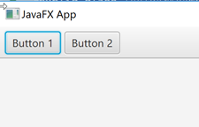
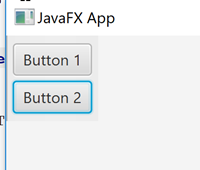
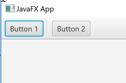

La clase ToolBar de JavaFX (javafx.scene.control.ToolBar) es una barra horizontal o vertical que contiene botones o iconos que normalmente se utilizan para seleccionar diferentes herramientas de una aplicación JavaFX.
ToolBar no es un control, es un container, como HBox, VBox, Anchor, etc.
En realidad, una barra de herramientas JavaFX puede contener otros controles JavaFX además de botones e iconos. De hecho, se puede insertar cualquier control JavaFX en una barra de herramientas.
Creación de una barra de herramientas
Para crear una barra de herramientas JavaFX, primero se debe crear una instancia de la clase.
ToolBar toolBar = new ToolBar();Añadir de elementos a una barra de herramientas
Una vez que se ha creado una barra de herramientas JavaFX, se pueden añadir elementos (componentes JavaFX). Para añadir elementos a una barra de herramientas, debemos obtener su colección de elementos y añadir el nuevo elemento a esa colección. Por ejemplo:
Button button = new Button("Click Me");
toolBar.getItems().add(button);Añadir una barra de herramientas al gráfico de escena
Para hacer visible una barra de herramientas JavaFX, se debe añadir al gráfico de escena JavaFX.
Por ejemplo:
import javafx.application.Application;
import javafx.scene.Scene;
import javafx.scene.control.*;
import javafx.scene.layout.VBox;
import javafx.stage.Stage;
public class ToolBarExample extends Application {
public static void main(String[] args) {
launch(args);
}
@Override
public void start(Stage primaryStage) {
primaryStage.setTitle("JavaFX App");
ToolBar toolBar = new ToolBar();
Button button1 = new Button("Button 1");
toolBar.getItems().add(button1);
Button button2 = new Button("Button 2");
toolBar.getItems().add(button2);
VBox vBox = new VBox(toolBar);
Scene scene = new Scene(vBox, 960, 600);
primaryStage.setScene(scene);
primaryStage.show();
}
}
La vista de JavaFX resultante de este ejemplo de barra de herramientas sería similar a esto:

Barra de herramientas orientada verticalmente
De forma predeterminada, una barra de herramientas JavaFX muestra los elementos que se le añaden en una fila horizontal. Es posible hacer que la barra de herramientas muestre los elementos verticalmente, de modo que la barra de herramientas se convierta en una barra de herramientas vertical. Para hacer que la barra de herramientas muestre sus elementos verticalmente, hay que utilizar su método setOrientation().
toolBar.setOrientation(Orientation.VERTICAL);Aquí hay una captura de pantalla de cómo se ve la barra de herramientas JavaFX de la sección anterior en orientación vertical:

Separación de los elementos en una barra de herramientas
Podemos insertar un separador visual a una barra de herramientas JavaFX. El separador visual normalmente se muestra como una línea vertical u horizontal entre los elementos de la barra de herramientas.
Button button1 = new Button("Button 1");
toolBar.getItems().add(button1);
toolBar.getItems().add(new Separator());
Button button2 = new Button("Button 2");
toolBar.getItems().add(button2);Resultado:
